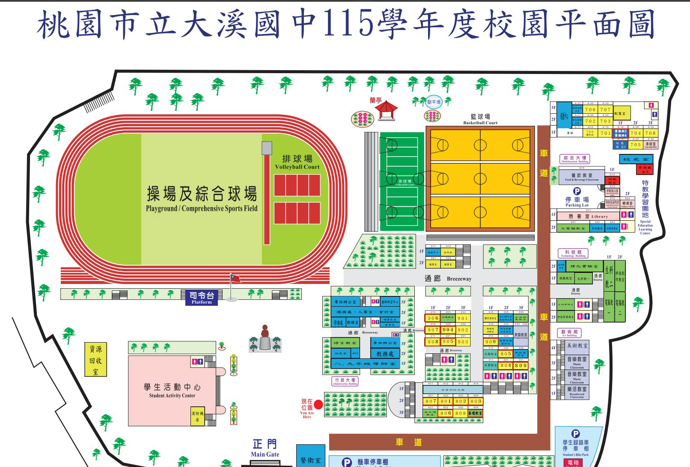

🧑🎓 大溪同學 (您在此)
✕
DAXI · CAMPUS FIELD NOTES
走進大溪國中
帶著小朋友走過每一條走廊、每一座樓梯。搜尋教室，金色路線會帶你探索校園。
找研習或會議場地：點上方搜尋框，直接選擇常用場地，就能顯示路線。
走進校園
先看鳥瞰
W A S D
W／S 前進後退，A／D 轉向，Shift 加速
滑鼠
轉頭；手機用方向鍵移動，拖曳畫面轉頭
V
切換第三人稱／第一人稱
M
切換步行／鳥瞰
溪
桃園市立大溪國中
115 學年度・立體校園探索
🔍
🦅
鳥瞰全景
🗺️
總平面圖
❓
說明
🏛️ 校長室 (前棟2F)
📚 教務處 (前棟2F)
🎖️ 學務處 (後棟1F)
💬 輔導室 (特教2F)
💼 總務處 (後棟2F)
🩺 健康中心 (北棟1F)
🎒 701 教室 (1F)
🎒 801 教室 (南棟2F)
🎒 901 教室 (中西棟 3F)
🪵 木藝教室 (中棟1F)
📖 圖書館 (綜合棟1F)
🏀 學生活動中心禮堂
🏃 操場司令台
🗿 蔣公銅像庭園
🏀 籃球場群
🏐 戶外排球場
全
4F
3F
2F
1F
圖上
1F
▲
◀
MOVE
▶
▼
速度 100%
轉頭 100%
移動速度
✕
移動速度
100%
慢 • 50%
快 • 200%
走路與跑步同步調整；按「跑」或 Shift 再加速。
恢復預設
轉頭設定
✕
轉頭靈敏度
100%
穩 • 20%
快 • 300%
滑鼠轉頭方式
移動滑鼠就轉頭
按住滑鼠左鍵轉頭
按住滑鼠右鍵轉頭
上下反轉
恢復預設
🚩 導航目的地
目標教室名稱
最佳推薦路徑規劃中...
0
m
🚶♂️ 自動帶路
✕
切換視角模式
🗺️ 大溪國中 115 學年度官方校園平面圖比對
✕

🎮 3D 智慧導覽操作說明
🖱️
自由旋轉視野
：左鍵拖曳 360° 旋轉視野，右鍵平移，滾輪自由縮放距離。
⌨️
人物行走操控
：
W
A
S
D
或方向鍵前進後退、轉向，
Shift
加速奔跑。
📱
觸控支援
：單指旋轉全景，雙指捏合縮放，右下角按鈕移動角色。
🏢
樓層切換
：點選右側 1F ~ 4F 即可透視內部教室配置與走廊。
🪜
實體樓梯爬升
：導航至 2F/3F 教室時，同學會由川堂走至樓梯間沿踏階走上樓！
🚶
自動帶路
：搜尋或點擊任意門牌後，點擊「自動帶路」同學將親自帶您前往！
🗺️
平面總圖
：按
M
鍵可隨時對照 115 學年度原始平面藍圖。
我知道了！開始導覽